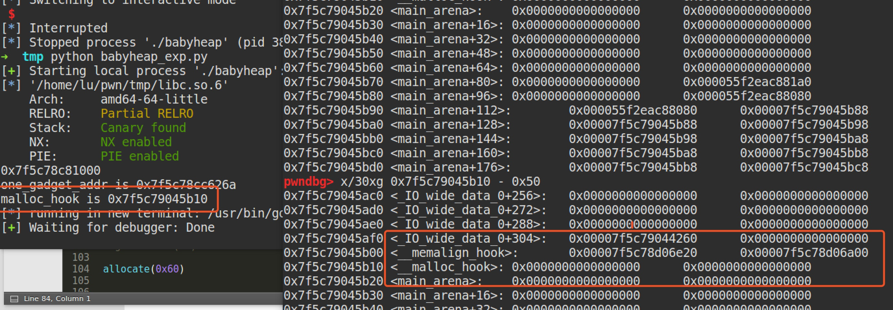

Fastbin Attack
fastbin attack 是一类漏洞的利用方法,如果细分的话，可以做如下的分类：
Fastbin Double Free
House of Spirit
Alloc to Stack
Arbitrary Alloc
其中，前两种主要漏洞侧重于利用 free 函数释放真的 chunk 或伪造的 chunk，然后再次申请 chunk 进行攻击，后两种侧重于故意修改 fd 指针，直接利用 malloc 申请指定位置 chunk 进行攻击。
原理
fastbin attack 存在的原因在于 fastbin 是使用单链表来维护释放的堆块的，并且由 fastbin 管理的 chunk 即使被释放，其 next_chunk 的 prev_inuse 位也不会被清空。
Fastbin Double Free
Fastbin Double Free 是指 fastbin 的 chunk 可以被多次释放，因此可以在 fastbin 链表中存在多次。这样导致的后果是多次分配可以从 fastbin 链表中取出同一个堆块，相当于多个指针指向同一个堆块
Fastbin Double Free 能够成功利用主要有两部分的原因
- fastbin 的堆块被释放后 next_chunk 的 pre_inuse 位不会被清空
- fastbin 在执行 free 的时候仅验证了 main_arena 直接指向的块，即链表指针头部的块。对于链表后面的块，并没有进行验证。
下面的示例程序说明了这一点，当我们试图执行以下代码时,报错。
1 | int main(void) |
执行如下代码时,即如果我们在 chunk1 释放后，再释放 chunk2 ，这样 main_arena 就指向 chunk2 而不是 chunk1 了，此时我们再去释放 chunk1 就不再会被检测到。
1 | int main(void) |
注意因为 chunk1 被再次释放因此其 fd 值不再为 0 而是指向 chunk2，这时如果我们可以控制 chunk1 的内容，便可以写入其 fd 指针从而实现在我们想要的任意地址分配 fastbin 块。 下面这个示例演示了这一点，首先跟前面一样构 main_arena=>chunk1=>chunk2=>chunk1的链表。之后第一次调用 malloc 返回 chunk1 之后修改 chunk1 的 fd 指针指向 bss 段上的 bss_chunk，再连续malloc两次之后，再次malloc即可返回bss段的地址，从而造成任意地址写。
1 | typedef struct _chunk |
在我的系统上 chunk_b 输出的值会是 0x601090，这个值位于bss段中正是我们之前设置的CHUNK bss_chunk
值得注意的是，我们在 main 函数的第一步就进行了bss_chunk.size=0x21;的操作，这是因为_int_malloc会对欲分配位置的 size 域进行验证，如果其 size 与当前 fastbin 链表应有 size 不符就会抛出异常。
0ctf2017 babyheap
程序分析
程序是一个堆分配器，主要有以下四种功能
1 | puts("1. Allocate"); |
申请的 chunk 的最大为 4096。此外，我们可以看出每个管理chunk的部分主要有三个字段：是否在使用，堆块大小，堆块位置。
需要注意的是堆块是由 calloc 分配的，calloc() 函数用来动态地分配内存空间并初始化为 0，其原型为：
1 | void* calloc (size_t num, size_t size); |
calloc() 与 malloc() 的一个重要区别是：calloc() 在动态分配完内存后，自动初始化该内存空间为零，而 malloc() 不初始化，里边数据是未知的垃圾数据。下面的两种写法是等价的：
1 | // calloc() 分配内存空间并初始化 |
在填充内容的功能中，使用读取内容的函数是直接读取指定长度的内容，并没有设置字符串结尾。而且这个指定长度是我们指定的，并不是之前 chunk 分配时指定的长度，所以此处存在堆溢出。
利用思路
主要的漏洞是任意长度堆溢出。由于该程序几乎所有保护都开启了，所以我们必须泄漏一些地址，才可以劫持控制流。基本利用思路如下：
1 | 利用 unsorted bin 地址泄漏 libc 基地址。 |
leak libc
由于我们是希望使用 unsorted bin 来泄漏 libc 基地址，所以必须要有 chunk 可以被链接到 unsorted bin 中，所以该 chunk 不能使 fastbin chunk，也不能和 top chunk 相邻。因为前者会被添加到 fastbin 中，后者在不是fastbin 的情况下，会被合并到 top chunk 中。因此，我们这里构造一个 small bin chunk。在将该 chunk 释放到 unsorted bin 的同时，也需要让另外一个正在使用的 chunk 可以同时指向该 chunk 的位置。这样才可以进行泄漏。具体设计如下
1 | allocate(0x10) #0 |
1 | pwndbg> x/50gx 0x564d134f6000 |
当我们编辑id0，修改id0的fd后，确实已经将其指向id4了。这里之所以可以成功是因为64位下堆始终是16字节对齐的，所以idx 4的起始地址的第一个字节必然是0x80。
1 | payload = 'a'*0x10 + p64(0) + p64(0x21) + p8(0x80) |
修改后如下,id1的fd指向了id4:
1 | pwndbg> x/50gx 0x56360c25f000 |
那么，当我们再次申请两个chunk时，第二个申请到的就是id4处的chunk。为了能够申请成功，我们需要确保 id4 的size 与当前 fastbin 的大小一致，所以，我们得修改它的大小。申请成功后，id2会指向id4。
1 | payload = 'a'*0x10 + p64(0) + p64(0x21) |
之后，如果我们想要将 id4 放到 unsorted bin 中的话，为了防止其与top chunk 合并，我们需要再次申请一个chunk。此后再释放 id4 就会进入 unsorted bin中去了。此时由于 id2 也指向这个地址，所以我们直接展示他的内容就可以得到unsorted bin的地址了。
1 | allocate(0x80) #5 |
_hook至one_gadget
tips：
在arena的上面，有个malloc_hook，当这个地址的值不为0时，我们执行malloc将会先跳到malloc_hook的地址上执行指令。所以这里就有一个思路了，我们把malloc_hook给赋值一个执行shell指令的地址，该地址假设为0xabcd，然后我们执行malloc函数，就可以拿到shell了。
__malloc_hook附近情况如下：

覆盖malloc_hook很简单，就是通过上面的fastbin_dup方法，malloc出最大是malloc_hook附近的地址，然后通过fill来覆盖malloc_hook。
这里的唯一问题就是malloc的长度检查，然后fastbin的size范围是0x20-0x80（64位情况下）
这个问题也好解决，我们可以看看上面的数据，储存了一些地址，而这些地址的高位都是0x7f，所以可以将fastbin的header地址设置为malloc_hook-0x23，这样，就成功构造了一个有效size，从而利用size=0x7f触发fastbin attack，将malloc_hook修改为one_gadgets。
接下来通过free掉id4后，再通过fill id2将id4的改为malloc_hook-0x23，然后allocate两次，第二次得到的就是malloc_hook-0x23，即id6，再进行fill id6即可劫持__malloc_hook为one_gadget。
1 | malloc_hook_addr = libc_base + 0x3C4B10 |
这里的 onegadget 地址也可能需要尝试多次。
getshell